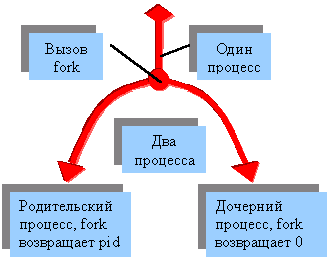

Программирование интернет-приложений в Borland Kylix. Часть I
Создай своих демонов!
В этой статье речь пойдет о создании интернет серверов (сетевых демонов) в Linux при помощи среды разработки Kylix и входящего в нее набора компонентов Internet Direct. В качестве примера описывается разработка простого сервера протокола HTTP.
Одной из сильных сторон Delphi и Kylix является возможность быстрой разработки мощных Интернет приложений. С этой целью в состав обеих сред включены наборы готовых компонентов для работы с Интернет. В Delphi 6 и Kylix 1.0 эту функцию выполняет Internet Direct component suite ( Indy ). Indy представляет собой набор классов Object Pascal (существует также версия для Borland C++ Builder) для работы с Интернет. Одни классы, такие как TIdTCPConnection, предоставляют базовые функции для низкоуровневой работы с сервисами Интернет, другие классы, такие как TIdHTTPServer, являются готовыми Интернет серверами или клиентами со встроенной поддержкой всех основных функций соответствующих сетевых протоколов. К достоинствам Indy следует отнести качественный механизм многопоточности (multi-threading), доступный как в Windows, так и в Linux версии. Еще одним достоинством Indy является доступность исходных текстов всех компонентов набора. Indy распространяется под двойным лицензированием, что позволяет создавать на его базе как открытые, так и коммерческие приложения.
Создать простейший Интернет сервер для Windows в Delphi 6 достаточно легко: бросаем в окно формы соответствующий компонент, назначаем пару обработчиков событий и voila: сервер готов! В Linux все выглядит лишь немного сложнее.
Демоны Linux
Большинство сетевых серверов Linux реализованы в виде демонов. Так, например, популярный web-сервер Apache, это демон протокола HTTP (httpd). Демон (daemon, demon) - это программа, выполняющаяся в фоновом режиме и настроенная на обработку определенного класса событий. После запуска демон находится в состоянии ожидания события. Когда в системе происходит соответствующее событие, демон активизируется и выполняет необходимые действия по его обработке. Важной особенностью демонов является возможность параллельной обработки нескольких событий. Демоны бывают не только сетевыми. Например печатью в Linux управляет демон печати, а записью сообщений в log-файлы - log-демон (logd).
Сетевой демон находится в состоянии ожидания запроса на соединение. Когда такой запрос поступает, демон либо устанавливает соединение и выполняет обработку запроса, либо отказывается установить соединение. Сразу отмечу, что программа-сервер Интернет вовсе не обязательно должна быть демоном. В следующих статьях этой серии мы напишем сервер, обладающий полноценным графическим интерфейсом. Однако, если Вы хотите, чтобы Ваш сервер запускался вместе с операционной системой и выполнялся вне зависимости от того, кто из пользователей работает в системе в данный момент, реализация сервера в форме демона представляется наилучшим вариантом.
Демон, это консольное приложение, выполняющееся в фоновом режиме. Фоновым режимом (background mode) называется такой режим работы программы, в котором приложение не взаимодействует с терминалом. После запуска демон должен переходить в фоновый режим автоматически.
Орудие демона - функция fork
Прежде чем приступить к программированию демона, следует рассмотреть подробнее функцию fork, которая играет в работе демонов важную роль. В Kylix функция fork объявлена в модуле Libc. Объявление функции выглядит следующим образом:
function fork: __pid_t; cdecl;
Функция fork создает новый процесс, являющийся точной копией того процесса, из которого она была вызвана. Выполнение нового процесса начинается с точки возврата функции fork. Таким образом после успешного вызова функция fork возвращает значения уже двум процессам. Новый процесс работает так, как если бы он выполнялся с самого начала, вызвал функцию fork и получил ее значение. Оба процесса принадлежат к одной и той же группе и разделяют открытые дескрипторы файлов. Отличить дочерний процесс от родительского можно по значению, возвращаемому функцией fork. Родительскому процессу fork возвращает pid созданного дочернего процесса, тогда как дочернему процессу возвращается значение 0.
Рисунок справа иллюстрирует работу функции fork. Функция fork (в переводе с английского - вилы, вилка) широко используется при программировании демонов. Вот почему демон, изображенный на эмблеме FreeBSD, держит вилы в руках.
Структура демона
Как было указано выше, демон должен быть консольным приложением. В окне New Items (Вызывается командой File|New...) на вкладке New выбираем элемент Console Application. Открывается окно с заготовкой файла проекта консольного приложения. Этот файл будет содержать все основные элементы создаваемого демона. Обычно имя исполняемого файла демона заканчивается на букву d (htppd, ftpd, crond). Назовем создаваемый проект dhttpd.
Наша первая задача - перевести запущенный демон в фоновый режим. Для этого при помощи fork создается копия процесса демона, а выполнение исходного процесса завершается:
pid := fork;
if pid = -1 then // fork failed
begin
perror( PChar('fork 1: ') );
Halt( 1 );
end else
if pid <> 0 then Halt( 0 ); // parent process exits
...
Здесь pid - глобальная переменная типа Integer. Если при вызове функции fork произошла ошибка, функция возвращает значение -1, и приложение должно завершиться. После удачного вызова функции fork родительскому процессу возвращается pid дочернего процесса, не равный нулю. Родительский процесс завершает работу, а дочерний продолжает выполняться. После завершения родительского процесса контроль над терминалом возвращается запустившей его программе (оболочке), а новый процесс, созданный функцией fork, выполняется в фоновом режиме. Однако наш процесс все еще принадлежит той же группе, что и создавший его процесс. Для того чтобы демон стал полностью независим от запустившего его терминала, новый процесс следует поместить в новую группу, а самый простой способ сделать это - создать новую сессию. (Подробнее о сессиях и группах процессов можно прочесть в [3].) Новая сессия создается вызовом функции setsid:
pid := setsid;
if pid = -1 then // setsid failed
begin
perror( PChar('setsid: ') );
Halt( 1 );
end;
...
Далее мы закрываем стандартный поток ввода и перенаправляем потоки вывода на /dev/null (это необходимо сделать, так как некоторые функции могут использовать стандартные потоки для вывода служебной информации).
Close( Input ); // closing stdin AssignFile( Output, '/dev/null' ); Rewrite( Output ); AssignFile( ErrOutput, '/dev/null' ); Rewrite( ErrOutput ); ...
Теперь процесс выполняется в режиме демона. Сохраним pid процесса в файле dhttpd.pid в каталоге /var/run (зачем это нужно объясняется ниже). Следует отметить, что демон должен запускаться в режиме, предоставляющем полный доступ к ресурсам компьютера, т. е. в режиме root или в ходе загрузки операционной системы. Это необходимо не только для получения доступа к таким каталогам, как /var/run, но и для работы с сокетами, что является основной функцией создаваемого нами приложения.
AssignFile( F, '/var/run/dhttpd.pid' ); Rewrite( F ); pid := getpid; WriteLn( F, pid ); CloseFile( F ); ...
Здесь F - переменная типа Text.
Нам еще необходимо организовать обработку сигналов. Сигналы Linux (их не следует путать с сигналами Qt library) очень похожи на прерывания MS-DOS. Фактически сигналы основаны на программных прерываниях. Когда процессу Linux посылается сигнал, для которого установлен обработчик, выполнение процесса прерывается и вызывается процедура обработчика сигнала. По окончании выполнения обработчика основной процесс возобновляется с той точки, в которой он был прерван, если, конечно, обработчик сигнала не завершил процесс. В Linux процессу предоставлены широкие возможности по управлению обработкой большинства сигналов: Процесс может блокировать сигналы, игнорировать сигналы, назначать свои обработчики сигналов или использовать обработчики, назначенные системой по умолчанию. Характерной особенностью сигналов Linux является асинхронность. Это означает, что незаблокированный сигнал может прервать выполнение программы в любой точке. Данный факт нужно учитывать при написании обработчиков сигналов. Сигналы Linux и их обработка подробно описаны в [3].
Существует два основных подхода к обработке сигналов Linux: первый подход заключается в том, что все действия по обработке сигнала выполняются в процедуре обработчика. При втором подходе обработчик сигнала лишь изменяет значения некоторых глобальных переменных-флажков. Основной процесс периодически проверяет состояние флажков и в случае их изменения выполняет операции, связанные с соответствующим сигналом. Этот подход позволяет синхронизировать обработку сигналов с выполнением других элементов программы.
При программировании нашего демона мы пойдем по второму пути. В программе объявляется глобальная переменная SigNum типа Integer, а в качестве обработчика сигналов служит процедура TranslateSig:
procedure TranslateSig( sig : Integer ); cdecl;
begin
SigNum := sig;
end;
Функция TranslateSig просто присваевает переменной SigNum номер полученного сигнала. В создаваемом демоне мы ограничемся обработкой сигналов SIGTERM и SIGHUP. Связываем обработчик TranslateSig с этими сигналами:
signal( SIGTERM, @TranslateSig );
signal( SIGHUP, @TranslateSig );
Теперь следует задать цикл обработки сигналов. Можно просто проверять значение SigNum в бесконечном цикле, однако есть более изящный и менее ресурсоемкий способ - функция sigsuspend. В качестве единственного параметра этой функции передается маска сигналов - переменная типа __sigset_t. Функция sigsuspend приостанавливает выполнение вызвавшего ее потока до тех пор, пока не поступит один из сигналов, не включенных в маску. В этом случае, если обработчик сигнала не завершает процесс, функция sigsuspend возвращает управление. В следующем фрагменте выполняется установка маски (переменная SigSet) и организуется цикл обработки сигналов с использованием функции sigsuspend:
sigfillset( SigSet );
sigdelset( SigSet, SIGTERM );
sigdelset( SigSet, SIGHUP );
SigNum := 0;
while SigNum <> SIGTERM do
begin
sigsuspend( SigSet );
if SigNum = SIGHUP then
begin
...
pid := fork;
if pid <> 0 then Break; // old process exits
...
end;
end;
Обратите внимание на то, как обрабатывается сигнал SIGHUP. В ответ на сигнал демон создает новую копию процесса (при помощи функции fork), а старый процесс завершается. Именно ради обработки сигнала SIGHUP организован цикл while do.
Полный листинг файла dhttpd.dpr приводится в конце статьи. В программу добавлена обработка опций командной строки. Принцип обработки опций командной строки очень прост: новый процесс читает значение, записанное в файл /var/run/dhttpd.pid, с помощью функции kill посылает ранее запущенному процессу соответствующий сигнал и затем завершается.
В нашем примере не рассмотрена еще одна функция демона - ведение log-файлов. Большинство сетевых демонов записывают данные о транзакциях и о своей работе в специальные файлы. Каждое приложение ведет свой log-файл. Обычно log-файлы хранятся в директории /var/log/. Разумеется, каждое приложение может само создавать и поддерживать такие файлы, однако в Linux существует централизованный механизм ведения log-файлов - демон logd. Главное преимущество использования демона logd заключается в том, что logd скрывает детали процесса ведения log-файлов от приложения. Такие параметры, как физическое размещение файлов, задаются в процессе конфигурации демона logd и не влияют на работу приложения, записывающего логи. Например, демон logd может быть сконфигурирован таким образом, что запись log-файлов будет производиться на удаленный компьютер. Система Linux предоставляет приложениям простой интерфейс для работы с демоном logd. Основные операции выполняются при помощи трех функций: Функция openlog открывает log-файл, closelog - закрывает файл, syslog выполняет запись.
Остальное - Indy
Наша программа теперь обладает всеми атрибутами демона, но она все еще не выполняет никакой полезной работы. Программирование сетевых демонов - непростая задача. Классические демоны Unix используют дочерние процессы для параллельной обработки соединений. На практике, для ускорения работы приложения-демона, часто применяются более сложные схемы, включающие предварительное создание процессов. Подробности можно найти в [2].
В нашем распоряжении, однако, есть компоненты Indy, предоставляющие самый эффективный механизм параллельной обработки соединений - многопоточность. Для того, чтобы при помощи Indy создать Web сервер, обладающий основными функциями по работе с HTTP, нам потребуется создать объект класса TIdHTTPServer (этот класс определен в модуле IdHTTPServer) и назначить обработчик события OnCommandGet.
В создаваемом нами приложении все объекты для работы с Web определены в модуле WebServ, полный текст которого приводится в конце статьи. Константа HTTPDocsDir содержит путь к каталогу, в котором хранятся HTTP файлы. В Linux Mandrake это /var/www/html. Все операции по работе с протоколом HTTP выполняет объект WebServer класса TWebSerever. Экземпляр TWebSerever создается в начале работы демона и уничтожается при завершении процесса. Для того, чтобы наш сервер не конфликтовал со стандартным Web сервером, мы присвоим ему порт 8800. Разбирать здесь подробно работу с компонентами Indy мы не будем, так как во-первых это уже не имеет непосредственного отношения к программированию демонов, а во-вторых детали работы компонента IdHTTPServer исчерпывающе описаны в справочной системе по Indy и прилагающихся примерах.
Теперь можно проверить работу демона. Скомпилировав проект даем в режиме root команду:
# dhttpd
Командная строка тут же снова появляется на экране. Так и должно быть, ведь демон сразу переходит в фоновый режим. Для того, чтобы убедиться в том, что демон работает, откроем броузер и введем в строке адреса: http://localhost:8800/ (префикс http:// следует указывать потому, что порт 8800 не является стандартным портом протокола HTTP). В окне броузера должна появиться страница index.html из каталога, заданного в константе HTTPDocsDir. Если каталог HTTPDocsDir содержит несколько файлов и подкаталогов, можно проверить, как выполняется навигация. При этом следует учесть, что корневому каталогу Web-пространства соответствует каталог HTTPDocsDir. Если значение этой константы - /var/www/html, то URL http://localhost:8800/foo/bar.html будет соответствовать путь /var/www/html/foo/bar.html. Работа демона может быть завершена командой dhttpd -stop, а для перезапуска ранее запущенного демона служит команда dhttpd -restart.
"Вселение демона" в систему
Опции командной строки позволяют нам запускать и останавливать демон в ручном режиме, однако обычно демоны запускаются автоматически в ходе загрузки операционной системы. В таких системах, как Red Hat или Mandrake самый простой способ обеспечить автоматический запуск демона заключается в создании скрипта SysV Init. Скрипты SysV Init можно рассматривать как некий аналог файла autoexec.bat в системе MS-DOS. Скрипты - это исполнимые файлы, написанные на языке сценариев оболочки (shell script language). Для каждого демона создается свой файл скрипта, имя которого обычно совпадает с именем демона. В конце этой статьи приводится скрипт dhttpd, служащий для запуска демона dhttpd.
В Red Hat и Mandrake скрипт dhttpd следует скопировать в каталог /etc/rc.d/init.d/ (не забудьте придать скрипту статус исполнимого файла). Но это еще не все. Каталог /etc/rc.d/ содержит несколько подкаталогов rcX.d, где X - число от 1 до 6, соответствующее уровню, на котором работает система. Каждый из этих каталогов содержит символические ссылки на файлы скриптов, которые следует выполнять при запуске системы на соответствующем уровне. Вы должны создать символические ссылки на скрипт dhttpd в каталогах rcX.d, соответствующих уровням, в которых должен запускаться демон (ссылки можно разместить во всех каталогах). Имя ссылки на скрипт должно соответствовать шаблону SXXname, где XX двузначное число, указывающее очередность запуска программы, а name - любая последовательность символов, обычно соответствующая имени файла скрипта. Например, для скрипта dhttpd имя ссылки может иметь следующий вид: S95dhttpd. Сам исполнимый файл демона, который также имеет имя dhttpd, можно разместить в каталоге /usr/sbin/.
Если все сделано правильно, то при следующем запуске системы, в конце списка сообщений, сопровождающих процесс загрузки, можно будет увидеть сообщение о запуске демона dhttpd. Убедиться в том, что демон работает, можно, как и в предыдущем случае, введя в строке адреса броузера URL "http://localhost:8800/".
program dhttpd;
{$APPTYPE CONSOLE}
uses
Libc, SysUtils, WebServ;
var
F : Text;
SigSet : __sigset_t;
SigNum : Integer;
pid : Integer;
// Signal handler function
procedure TranslateSig( sig : Integer ); cdecl;
begin
SigNum := sig;
end;
begin
// Processing command line arguments
if ParamCount > 0 then
begin
if ParamCount = 1 then
begin
SigNum := 0;
if ParamStr(1) = '-stop' then SigNum := SIGTERM else
if ParamStr(1) = '-restart' then SigNum := SIGHUP;
if SigNum <> 0 then
begin
if FileExists( '/var/run/dhttpd.pid' ) then
begin
AssignFile(F, '/var/run/dhttpd.pid' );
Reset( F );
Read( F, pid );
CloseFile( F );
if kill( pid, SigNum ) = 0 then
Halt( 0 );
end;
WriteLn( 'dhttpd : cannot do ' + ParamStr( 1 ) + '. Maybe the daemon
is not running?' );
Halt( 0 );
end;
end;
WriteLn( 'Use dhttpd -stop to stop the daemon or dhttpd -restart to restart it.' );
Halt( 0 );
end;
// Daemon initialization code
pid := fork;
if pid = -1 then // fork failed
begin
perror( PChar('fork 1: ') );
Halt( 1 );
end else
if pid <> 0 then Halt( 0 ); // parent process exits
pid := setsid;
if pid = -1 then // setsid failed
begin
perror( PChar('setsid: ') );
Halt( 1 );
end;
Close( Input ); // closing stdin
AssignFile( Output, '/dev/null' );
Rewrite( Output );
AssignFile( ErrOutput, '/dev/null' );
Rewrite( ErrOutput );
// Now process runs in the daemon mode
WebServer := TWebServer.Create; // Creating server object
AssignFile( F, '/var/run/dhttpd.pid' );
Rewrite( F );
pid := getpid;
WriteLn( F, pid );
CloseFile( F );
signal( SIGTERM, @TranslateSig );
signal( SIGHUP, @TranslateSig );
sigfillset( SigSet );
sigdelset( SigSet, SIGTERM );
sigdelset( SigSet, SIGHUP );
SigNum := 0;
while SigNum <> SIGTERM do
begin
sigsuspend( SigSet );
WebServer.Free;
if SigNum = SIGHUP then // Restarting
begin
pid := fork;
if pid = -1 then Halt(1);
if pid <> 0 then Break; // old process exits
// Now we are in the new child process
WebServer := TWebServer.Create;
AssignFile( F, '/var/run/dhttpd.pid' );
Rewrite(F);
pid := getpid;
WriteLn( F, pid );
CloseFile(F);
end;
end;
end.
unit WebServ;
interface
uses
IdBaseComponent, IdComponent,
IdTCPServer, IdHTTPServer, SysUtils;
type
TWebServer = class( TObject )
IndyHTTP : TIdHTTPServer;
private
procedure HTTPCommandGet( AThread : TIdPeerThread;
RequestInfo : TIdHTTPRequestInfo; ResponseInfo : TIdHTTPResponseInfo);
public
constructor Create;
destructor Destroy; override;
end;
const
HTTPDocsDir = '/var/www/html';
var
WebServer : TWebServer;
implementation
// TWebServer methods
constructor TWebServer.Create;
begin
inherited Create;
IndyHTTP := TIDHTTPServer.Create( nil );
with IndyHTTP do
begin
ServerSoftware := 'DAEMONstration Web server. (c) 2001 Andrei Borovsky';
OnCommandGet := HTTPCommandGet;
TerminateWaitTime := 5000;
DefaultPort := 8800;
// Activate the Server
Active := True;
end;
end;
destructor TWebServer.Destroy;
begin
IndyHTTP.Free;
inherited Destroy;
end;
procedure TWebServer.HTTPCommandGet;
var
FName : String;
begin
FName := HTTPDocsDir + RequestInfo.Document;
if FName[ Length(FName) ] = '/' then FName := FName + 'index.html' else
if DirectoryExists( FName + '/' ) then
begin
// Redirecting directory without a trailing slash
ResponseInfo.Redirect( RequestInfo.Document + '/' );
Exit;
end;
if FileExists( FName ) then
begin
// Serving content
IndyHTTP.ServeFile( AThread, ResponseInfo, FName );
Exit;
end;
// Requested URL not found
ResponseInfo.ResponseNo := 404;
ResponseInfo.ResponseText := 'Requested URL not found';
ResponseInfo.ContentText := 'Error 404 - ' + ResponseInfo.ResponseText;
ResponseInfo.WriteHeader;
ResponseInfo.WriteContent;
end;
end.
Скрипт dhttpd
#!/bin/sh
#
# SysV Init script for DAEMONstration Web server (dhttpd)
#
# pidfile: /var/run/dhttpd.pid
#
# Source function library.
. /etc/rc.d/init.d/functions
case $1 in
start)
echo -n "Starting dhttpd"
daemon dhttpd
echo
touch /var/lock/subsys/dhttpd
;;
stop)
echo -n "Shutting down dhttpd"
killproc dhttpd
echo
rm -f /var/lock/subsys/dhttpd
rm -f /var/run/dhttpd.pid
;;
restart)
$0 stop
$0 start
;;
reload)
echo -n "Reloading dhttpd:"
killproc dhttpd -HUP
echo
;;
*)
echo "Usage: $(basename $0) start|stop|restart|reload"
exit 1
esac
exit 0
Литература
1. Griffin I, Nelson J (1998). Linux Network Programming, Part 1, Linux Journal, #46 February 1998
2. Griffin I, Nelson J (1998). Linux Network Programming, Part 2, Linux Journal, #47 March 1998
3. GLIBC Manual
Статья и примеры программ © 2001 Андрей Наумович Боровский.
Взято из http://forum.sources.ru